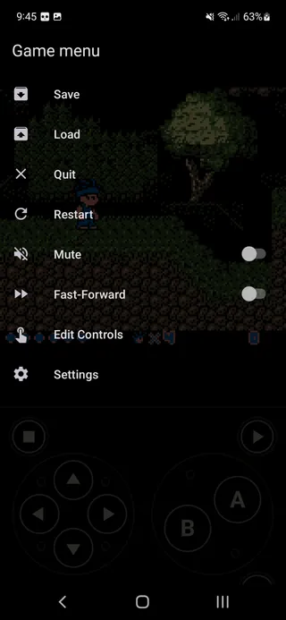

Lemuroid 这几个坑我踩过，你别再走弯路
从画面拉伸到 BIOS 配置，从手柄配对手序到存档丢失——Lemuroid 看着简单，但新手第一次上手总会撞上几个暗坑，这里把我踩过的五个坑全摊开说清楚。
半年前第一次从下载页拿到 Lemuroid 安装包的时候，我以为就是个点开就能玩的模拟器。它的官网界面干净，ROM 一丢进去系统就自动识别了，看着特别省心。结果真跑起来才发现——这玩意儿的坑全在默认设置没覆盖到的角落里，都是那种"不撞一下就不知道会炸，但撞一次下次就懂了"的类型。
写这篇就是把我踩过的五个坑全摊开说清楚，一个一个来。

坑一：画面拉满以为更爽，结果游戏变形了
症状：把 GBA 横过来玩《火焰纹章》，画面填满了整个 16:9 的手机屏，看起来特别开阔——但玩起来总觉得弓箭手射出去的箭轨道不对，跳跃高度也别扭，圆变得不圆，方变得不方。
原因：老游戏机的原始纵横比跟现代手机根本不一样。GBA 是 3:2，NES 是 4:3，PSP 倒是 16:9 但那是横掌机。直接"全屏拉伸"等于强制把画面撑进不匹配的框里，像素几何直接被破坏。我后来才明白：变形的画面会让碰撞检测的直觉判断出错，玩格斗和平台跳跃特别明显。
解法：进设置 → 显示 → 画面适配，选"保持原始纵横比"。多出的黑边忍一忍，换回来的是完全正确的比例。平板或者 Android TV 上可以选"整数倍缩放"，像素不糊、黑边也比保持比例少一点，追求画质的话这个最舒服。
坑二：PSX 游戏点了没反应，原来缺了 BIOS
症状：下载了《最终幻想 VII》的 ROM，双击启动——黑屏两秒直接闪退，没有任何错误提示。我以为是 ROM 坏了，换了三个版本还是一样。
原因：PlayStation 的模拟器必须要 BIOS 文件才能跑。不像 NES 或 GBA 模拟器可以完全软件模拟开机流程，PSX 的 BIOS 承担了开机画面、光驱驱动、内存卡接口和控制器处理这些核心功能，没有替代实现。Lemuroid 支持自动扫描 BIOS，但前提是你得放对位置、起对名字。
解法：BIOS 不用多准备，SCPH1001.bin 一个就够用——美区 BIOS，绝大多数 PSX 游戏兼容性最好。放到游戏目录的 BIOS/ 子文件夹里，文件名小写 scph1001.bin，设置里点一下"选择 BIOS 目录"指定到那个文件夹就行。验证方法很简单：启动游戏前如果能看到 PlayStation Logo 的开机画面，BIOS 就对了；直接闪退或颜色声音异常，那就是 BIOS 没配对。
坑三：两个手柄连上只能一个能用，配对顺序有讲究
症状：周末跟朋友约好双打《魂斗罗》，两个蓝牙手柄依次跟手机配对了，进游戏之后 Port 1 的手柄正常，但 Port 2 完全没反应。我反复进控制器设置、改 Port 分配，折腾了快一个小时。
原因：问题出在配对顺序。两个手柄同时打开蓝牙配对很容易让 Android 的蓝牙服务混乱——它可能只注册了一个物理设备，或者把两个手柄都塞进了同一个 Port。另外，Lemuroid 默认把手柄按配对先后分给 Port 1、Port 2，如果配对时手机系统那边还没完全连上就去开模拟器，Port 分配可能会错乱。
解法：一个一个来。先把手柄 A 配对好、确认"已连接"，再关手柄 A，开手柄 B 配对好，最后两个都开着进模拟器。进控制器设置手动核对一下每个 Port 分到了哪个物理手柄——手柄 1 → Port 1，手柄 2 → Port 2，保存。蓝牙延迟的问题离手机近一点配对、远离 WiFi 干扰就能缓解，玩格斗游戏追求零延迟可以走 USB OTG 有线接。
坑四：PSP 游戏卡得像 PPT，原来手机扛不住
症状：看到 Lemuroid 说支持 23 种系统，兴冲冲把《战神：奥林匹斯之链》塞进了游戏库。点开能识别、能进，但帧率稳定在 20 fps 左右，打斗场景直接掉到个位数，完全玩不了。
原因：支持不等于流畅。后来去Lemuroid文档翻了一下才搞清楚——PSP、NDS、3DS、N64 这些后期平台对 Android 硬件要求高，骁龙 8 系或天玑 9000 级别才能稳，入门机型能识别但帧率就是上不去。我那台骁龙 7 系的老手机跑 NES 和 GBA 毫无压力，一到 PSP 就暴露短板了。
解法：要么换旗舰机型跑 PSP/3DS，要么就老老实实玩前面几代——NES、SNES、GBA、MD 这些 8 位和 16 位系统对硬件没要求，骁龙 6 系都能满帧跑，ROM 资源反而更丰富。想玩 PSP 但手机不够强的话，别硬撑，先玩 GBA 版的替代作品，或者等新手机换上来再说。
坑五：存档找不到了？PSX 用的是虚拟内存卡
症状：玩《超级马里奥 64》存个档，退出再打开存档还在，一切正常。但换玩《最终幻想 VII》，存完档退出去，下次打开发现存档没了——我以为是存档文件被清理器删了，还差点给手机装的清理软件差评。
原因：N64、GBA 这些系统的存档是独立的 .sav 文件，直接存在游戏同目录或者模拟器的存档目录里。但 PSX 不一样——它用的是虚拟内存卡机制，存档统一存在一个 psx-memcard.mcr 文件里，不是每个游戏一个 .sav。而且这个内存卡文件默认存在 Lemuroid 的内部存储目录，清理软件扫的时候可能会当成缓存清掉。
解法：先确认你的游戏到底用哪种存档机制——N64/GBA 是 .sav，PSX 是 .mcr 内存卡。清理手机缓存的时候别把模拟器的数据目录勾上。如果真丢了也别慌，快速存档槽的 .sts 文件是独立存的，Lemuroid 支持在游戏里一键存读档，比原生存档可靠多了。

防坑清单
把这五个坑浓缩成几句话，下次装起来一眼扫过去就能避开：
- 画面永远选保持原始纵横比，黑边不丢像素，拉伸丢几何
- PSX 必须 SCPH1001.bin，放 BIOS/ 文件夹，看到开机画面才算成
- 多手柄配对一个一个来，不要同时开，进游戏先核对 Port 分配
- 旗舰以下别碰 PSP/3DS，前几代 8 位 16 位无压力，后期平台硬件吃紧
- PSX 存档是内存卡不是 .sav，别让清理软件动模拟器数据目录
知道这些坑之后，Lemuroid 其实相当省心——该有的内核都给你配好了，ROM 往里面一丢自动识别，界面也干净没有花里胡哨的东西。模拟器这种东西，90% 的故障都是环境和理解层面的，内核本身反而很少出问题。
这套资料的开源仓库在GitHub、Gitee和GitCode三处都有，GitHub 为主仓库，国内访问直接 Gitee 或 GitCode 更流畅，看你平时用哪个。